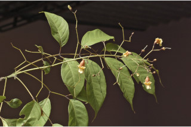
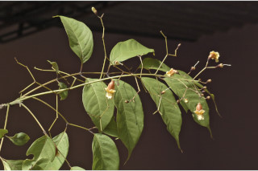
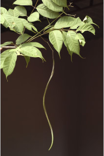
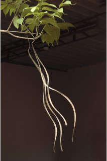
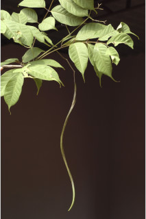
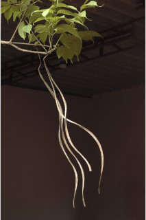

Large deciduous trees, often buttressed, up to 25 m tall.
ಎಲೆಯುದುರುವ ಮಾದರಿಯ ಬೃಹತ್ ವೃಕ್ಷವಾದ ಈ ಪ್ರಭೇದ 25ಮೀ ಎತ್ತರದವರೆಗೂ ಬೆಳೆಯುತ್ತದೆ ಹಾಗೂ ಹಲವು ಸಂದರ್ಭದಲ್ಲಿ ಆನಿಕೆಗಳ ಸಮೇತವಾಗಿರುತ್ತದೆ.
25 മീറ്റര് വരെ ഉയരത്തില് വളരുന്നതും, മിക്കവാറും വപ്രമൂലത്തോട് കൂടിയതുമായ, ഇലപൊഴിക്കും വന്മരങ്ങള്.
பெரிய இலையுதிர் மரம், தாங்கு வேர் (பட்ரஸ்டு), 25 மீ. உயரம் வரை வளரக்கூடியது.
Bark fissured, dark brown; blaze cream.
ತೊಗಟೆ ಸೀಳಿಕಾ ಅಥವಾ ಒಡಕುಳ್ಳ ಮಾದರಿಯಲ್ಲಿದ್ದು ಕಂದು ಬಣ್ಣ ಹೊಂದಿರುತ್ತದೆ.ಕಚ್ಚು ಮಾಡಿದ ಜಾಗ ಕೆನೆಬಣ್ಣವನ್ನು ಹೊಂದಿರುತ್ತದೆ.
വിണ്ടുകീറിയ പുറംതൊലി, കടുത്ത തവിട്ട് നിറം; വെട്ട്പാടിന് ക്രീം നിറം.
மரத்தின் பட்டை நீள்வாக்கில் பிளவுகளுடையது, அரக்கு நிறமானது; உள்பட்டை கிரீம்.
Branchlets terete, glabrous, lenticellate.
ഉപശാഖകള് ഉരുണ്ടുതും അരോമിലവും, ശ്വസനരന്ധ്രങ്ങളുളളതും.
சிறிய நுனிக்கிளைகள் குறுக்குவெட்டுத் தோற்றத்தில் வளையமானது, உரோமங்களற்றது, லெண்டிசெல் கொண்டது.
Leaves compound, imparipinnate, opposite, decussate, to 60 cm long; rachis 6-16.5 cm long, canaliculate, glabrous; leaflets 3-5 pairs, opposite with odd terminal one; petiolule 0.8-1.5 cm long, canaliculate; lamina 5-15 x 2.5-7.5 cm, elliptic, apex caudate (acumen 1.5-4 cm long) base cuneate to asymmetric, margin entire, chartaceous, glabrous; midrib flat above; secondary_nerves 8-10 pairs gradually curved; tertiary_nerves weakly percurrent.
ಎಲೆಗಳು ಅಸಮ ಸಂಖ್ಯಾಗರಿ ಸಂಯುಕ್ತ ಮಾದರಿಯಲ್ಲಿದ್ದು, ಕತ್ತರಿಯಾಕಾರದಲ್ಲಿ ಅಭಿಮುಖಿಗಳಾಗಿದ್ದು 60ಸೆಂ.ಮೀ. ನವರೆಗಿನ ಉದ್ದ ಹೊಂದಿರುತ್ತವೆ. ಅಕ್ಷದಿಂಡು 6 ರಿಂದ 16.5ಸೆಂ.ಮೀ. ಉದ್ದವಿದ್ದು ಕಾಲುವೆಗೆರೆ ಸಮೇತವಾಗಿದ್ದು ರೋಮರಹಿತವಾಗಿರುತ್ತವೆ. 3 ರಿಂದ 5 ಅಭಿಮುಖಿ ಜೋಡಿ ಕಿರು ಎಲೆಗಳಿದ್ದು ಒಂದು ಅಗ್ರಸ್ಥಾನದಲ್ಲಿರುತ್ತದೆ; ಕಿರು ಎಲೆಗಳ ತೊಟ್ಟು 0.8 ರಿಂದ 1.5ಸೆಂ.ಮೀ. ಉದ್ದವಿದ್ದು ಕಾಲುವೆಗೆರೆ ಸಮೇತವಾಗಿರುತ್ತದೆ; ಪತ್ರಗಳು 5 ರಿಂದ 15 ಸೆಂ.ಮೀ. ಉದ್ದ 2.5 ರಿಂದ 7.5ಸೆಂ.ಮೀ. ಅಗಲ ಹೊಂದಿದ್ದು ಅಂಡವೃತ್ತಾ-ಕೃತಿಯಲ್ಲಿದ್ದು ಬಾಲರೂಪಿ ತುದಿ (ತೀಕ್ಷ್ಣಾಗ್ರ ಭಾಗ 1.5 ರಿಮದ 4ಸೆಂ.ಮೀ. ಉದ್ದ) ಬೆಣೆಯಾಕಾರದಿಂದ ಅಸಮ್ಮಿತಿಯವರೆಗಿನ ಬುಡಭಾಗ, ನಯವಾದ ಅಂಚು, ರೋಮರಹಿತವಾದ ಹಾಗೂ ಕಾಗದವನ್ನೋಲುವ ಮೇಲ್ಮೈಯನ್ನು ಹೊಂದಿರುತ್ತವೆ; ಮಧ್ಯನಾಳ ಪತ್ರದ ಮೇಲ್ಭಾಗದಲ್ಲಿ ಚಪ್ಪಟೆಯಾಗಿರುತ್ತದೆ; ಎರಡನೇ ದರ್ಜೆಯ ನಾಳಗಳು ಕ್ರಮೇಣ ಓರೆಯಾಗುವ 8 ರಿಂದ 10 ಜೋಡಿಗಳಿದ್ದು ತೃತೀಯ ದರ್ಜೆಯ ನಾಳಗಳು ದುರ್ಬಲವಾಗಿ ಎಲೆದಿಂಡಿಗೆ ಅಡ್ಡವಾಗಿ ಕೂಡುವಂತಹವು.
അസമപിച്ഛക, സമ്മുഖ, ഡെക്കുസേറ്റ്, ബഹുപത്രങ്ങള്, 60 സെ. മീ വരെ നീളം; ബഹുപത്രഅക്ഷത്തിന് 6 സെ.മീ മുതല് 16.5 സെ. മീ വരെ നീളം, ചാലോട്കൂടിയതും അരോമിലവുമാണ്; പത്രകങ്ങള് 3 മുതല് 5 വരെ ജോഡികള്, സമ്മുഖമായി ക്രമീകരിച്ചിരിക്കുന്നു, അറ്റത്തുളളത് ഒറ്റയാണ്; പത്രകവൃന്തത്തിന് 0.8 മുതല് 1.5 സെ. മീ വരെ നീളം, ചാലോട് കൂടിയതാണ്; പത്രകഫലത്തിന് 5 സെ.മീ മുതല് 15 സെ. മീ വരെ നീളവും 2.5 സെ.മീ മുതല് 7.5 സെ. മീ വരെ വീതിയും, ദീര്ഘവൃത്താകാരം, പത്രാഗ്രം വാലോട്കൂടിയതാണ് (വാലിന് 1.5 സെ. മീ മുതല് 4 സെ. മീ വരെ നീളം), പത്രാധാരം ആപ്പിന്റെ ആകൃതി മുതല് അസമമോ ആണ്, അവിഭജിതം, കടലാസ് പോലത്തെ പ്രകൃതം, അരോമിലം; മുഖ്യസിര മുകളില് പരന്നാണിരിക്കുന്നത്; ദ്വിതീയ ഞരമ്പുകള് 8 മുതല് 10 വരെ ജോഡികള്, സാവധാനം വളഞ്ഞു പോകുന്നതുമാണ്; ത്രിതീയ ഞരമ്പുകള് ലഘുവായി പെര്കറന്റ് ആണ്.
இலைகள் கூட்டிலைகள், ஒற்றைபடை சிறகுவடிவக்கூட்டிலைகள், 60 செ.மீ. நீளமானது, கூட்டிலைகள் எதிரடுக்கமானது, குறுக்குமறுக்கமானவை; மத்தியகாம்பு (ராக்கிஸ்) 6-16.5 செ.மீ. நீளமானது, கேனாலிகுலேட், உரோமங்களுடையது; ஒர் கூட்டிலை 3-5 ஜோடி சிற்றிலைகளுடையது, சிற்றிலைகள் எதிரானது மற்றும் நுனியில் ஒற்றை சிற்றிலையுடையது; சிற்றிலைக்காம்பு 0.8-1.5 செ.மீ. நீளமானது, கேனாலிகுலேட்; சிற்றிலையின் அலகு 5-15 X 2.5-7.5 செ.மீ., நீள்வட்டமானது, சிற்றிலையின் அலகின் நுனி வால் போன்றது. (வால் 1.5-4 செ.மீ. நீளமானது), அலகின் தளம் ஆப்பு வடிவானது முதல் சமமற்றது, சிற்றிலையின் விளிம்பு முழுமையானது, சார்ட்டேசியஸ், கீழ்பரப்பு உரோமங்களற்றது; மையநரம்பு அலகின் மேற்பரப்பிற்கு சமமானது; இரண்டாம் நிலை நரம்புகள் 8-10 ஜோடிகளுடையது; மூன்றாம் நிலை நரம்புகள் அகன்ற பெர்க்கரண்ட்.
Inflorescence lax terminal panicles, flowers brownish purple, yellow within, petals wooly.
ಪುಷ್ಪ ಮಂಜರಿಗಳು ಸಡಿಲವಾಗಿದ್ದು ತುದಿಯಲ್ಲಿನ ಕವಲೊಡೆಯುವ ಮಧ್ಯಾಭಿಸರ ಮಾದರಿಯವು; ಹೂಗಳು ಕಂದುಮಿಶ್ರಿತ ಕೆನ್ನೀಲಿ ಬಣ್ಣದವಾಗಿದ್ದು ಹಳದಿ ಒಳಾವರಣವನ್ನು ಹೊಂದಿರುತ್ತವೆ. ಪುಷ್ಪದಳಗಳು ಉಣ್ಣೆಯುಕ್ತವಾಗಿರುತ್ತವೆ.
പൂങ്കുലകള് വിശാലമായ ഉച്ഛസ്ഥ പാനിക്കിളുകളാണ്, അകത്ത് മഞ്ഞ നിറത്തോടുകൂടിയ തവിട്ട് ഊത നിറത്തിലുളള പൂക്കള്, ദളങ്ങള് കമ്പിളി രോമങ്ങള് പോലുളള രോമങ്ങള് നിറഞ്ഞതാണ്.
மஞ்சரி தண்டின் நுனியில் காணப்படுபவை, மலர்கள் அரக்கு கலந்த பர்புள் நிறமானது, அல்லி இதழ்கள் மென்மையானவை.
Capsule, 4-angled, contorted, to 40 cm long; seeds many, winged.
ಸಂಪುಟ ಫಲಗಳು 4-ಕೋನಯುಕ್ತವಾಗಿದ್ದು, 40ಸೆಂ.ಮೀ. ವರೆಗಿನ ಉದ್ದ ಹೊಂದಿದ್ದು ತಿರುಚಿಕೊಂಡಿರುತ್ತದೆ; ಬೀಜಗಳು ರೆಕ್ಕೆಯುಕ್ತವಾಗಿದ್ದು ಬಹು ಸಂಖ್ಯೆಯಲ್ಲಿರುತ್ತವೆ.
കായ ചതുഷ്കോണോടുകൂടിയതും വളഞ്ഞുപുളഞ്ഞതുമാണ്, 40 സെ. മീ വരെ നീളം; ചിറകുളള ധാരാളം വിത്തുകള്.
வெடிக்கனி (கேப்சூல்), 4-கோணங்களுடையது, திருகியது, 40 செ.மீ. நீளமுடையது; விதைகள் எண்ணற்றவை, சிறகுடையது.


 



 


